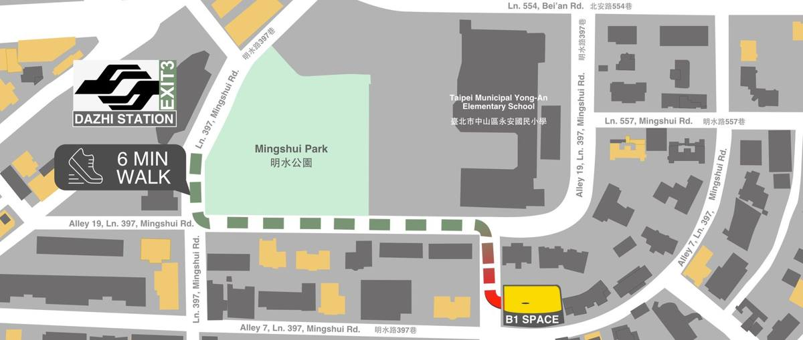
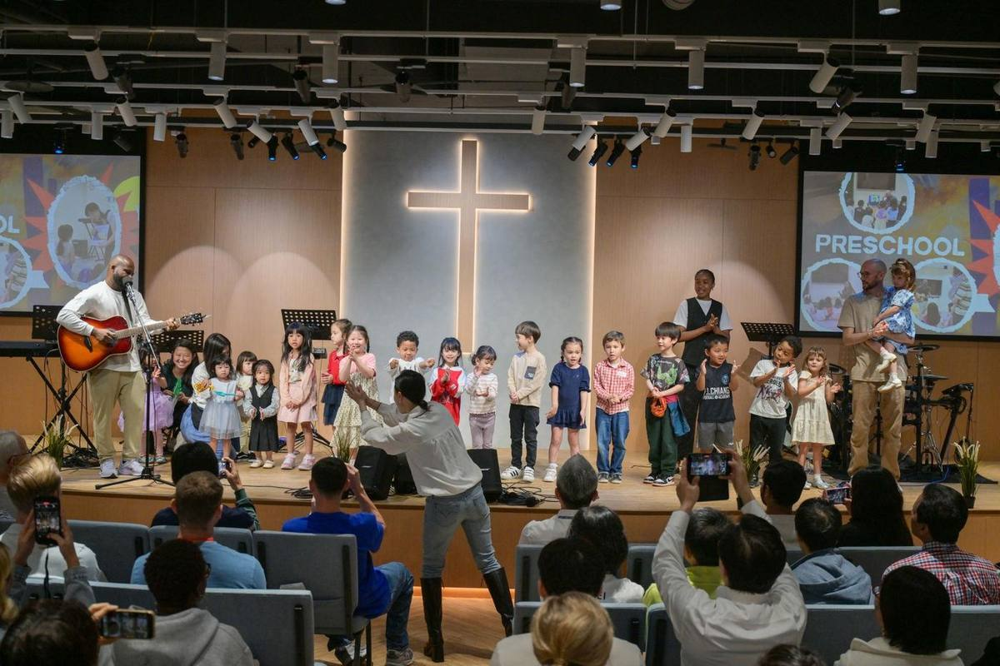
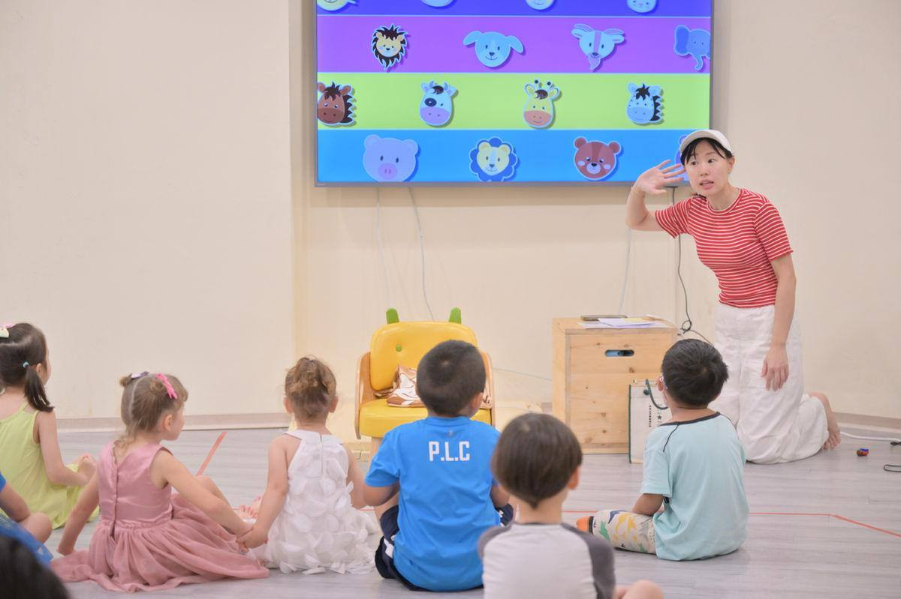
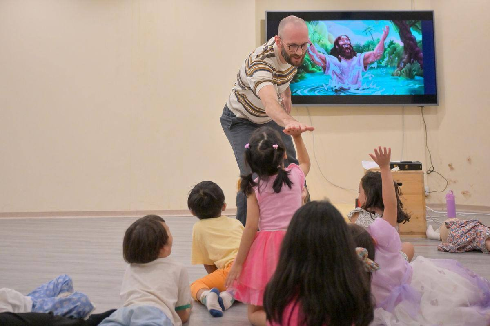

Plan your visit計劃您的來訪
Everything you need for your first Sunday at TIC.
第一次來台北國際教會所需要的資訊。
Address地址
B1, No. 41, Aly. 7, Ln. 397, Mingshui Rd., Zhongshan Dist., Taipei City 10466
In Chinese · show your taxi driver中文地址 · 可出示給計程車司機
台北市中山區明水路397巷7弄41號B1
Sunday walk guide主日步行指南
6 minutes from Dazhi MRT捷運大直站步行6分鐘

Your first Sunday你的第一個主日
What to expect聚會流程
- Arrive a little before 10:30Look for the blue TIC sign and head down to B1.請在10:30前抵達找到藍色的台北國際教會招牌，往下到B1。
- Worship togetherFamilies stay together for the singing, then children from Pre-K to grade 12 go to their programs.一同敬拜全家一起參加詩歌敬拜，之後學前班至12年級的孩子前往各自的聚會。
- Check in your kidsA parent or authorized adult checks each child in and out. Nursery care is available during the service.兒童報到每位孩子都需由家長或授權的成人辦理報到及接回。崇拜期間提供育嬰室照顧。
- Say hello at the welcome tableAsk questions, sign up for the newsletter or find a way to serve.到接待桌打個招呼有問題可以詢問、訂閱電子報，或找到服事的機會。
Families家庭事工
Room for every generation每個世代都有位置
Infants & toddlers嬰幼兒
Nursery育嬰室
Loving care during the 10:30 service.
上午10:30崇拜期間，由同工悉心照顧。
Pre-K – grade 5學前班至五年級
TIC Kids · 11:20–12:00
Worship, Bible teaching and small groups by grade.
敬拜、聖經教導，並依年級分組活動。
Grades 7 – 127至12年級
Youth service青少年聚會
Every Sunday during the service.
每主日崇拜時段。


